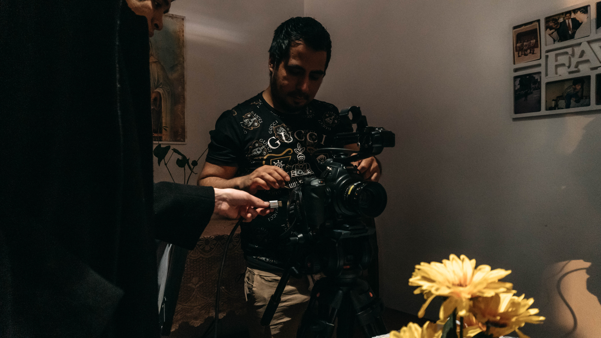
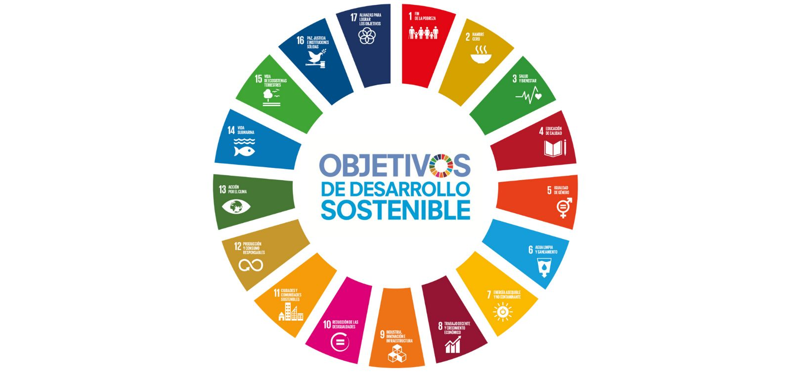
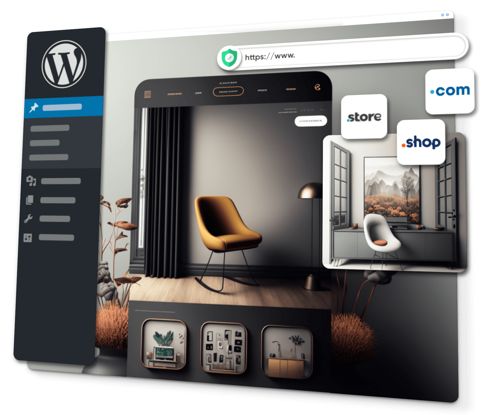

DINAMICA 4 - MARTÍN VENTO
|  |
SOBRE MIMi nombre es Martín Vento estudiante de la carrera de comunicación audiovisual y multimedia con conocimientos de medios digitales y desarrollo web, e-commerce y sistema de gestión de contenidos (CMS), marketing digital, SEO/SEM y creación de contenidos audiovisuales publicitarios, también entre mis habilidades destacaría la edición de video y la edición gráfica y vectorial para las cuales conozco una gran gama de programas de Adobe CC, Davinci Resolver, Cinema 4D y más. |
| |
Se realizo una actividad grupal por lo que primero nos agrupamos en grupos de cinco integrantes para poder crear una imagen que nos identifique como grupo y poder explicar porque la imagen realizada nos identifica, para que finalmente la imagen realizada se le tome una foto y con un USB se pudo sacar impreso en 3D. |
|  |
Se realizo una dinámica grupal de ODS, primero se selecciono un país y se dio a conocer el objetivo de desarrollo sostenible, despues de haber elegido el pais teníamos que indicar porque la problemática del país es más importante y va a impactar de manera positiva en la sociedad y finalmente un integrante de los grupo tenia que exponer la dinámica hecha en un papelote. |
|  |
Se realizo una dinamica individual primero se busco una idea de negocio o proyecto para poder hacerlo realidad utilizando la programación y arduino seguido de esto teniamos que crear la identidad o logo del proyecto o negocio que se acogió, luego de esto teníamos que ver nuestras habilidades y debilidades en la ejecución del negocio o proyecto que se escogió. Estas habilidades fueron cosas que sabemos hacer como por ejemplo utilizar programas, ser bueno administrando, etc. Las debilidades fueron cosas que todavía nos faltan para poder aprender para hacer factible tu proyecto o negocio. Finalmente se tuvo que hacer un esquema visual del proyecto para poder ver como quedaría y si se ejecutaría tu negocio o proyecto para luego un compañero exponga el proyecto elegido ala zar de uno de nuestros compañeros. |
 |
Se creo nuestra web utilizando las herramienta que nos brinda Google Sites para que de esa manera se pueda aplicar en nuestro proyecto individual y final del curso. Tambien se realizo la dinamica cuatro utilisando nuevas etiquetas en Visual Code Studio. |